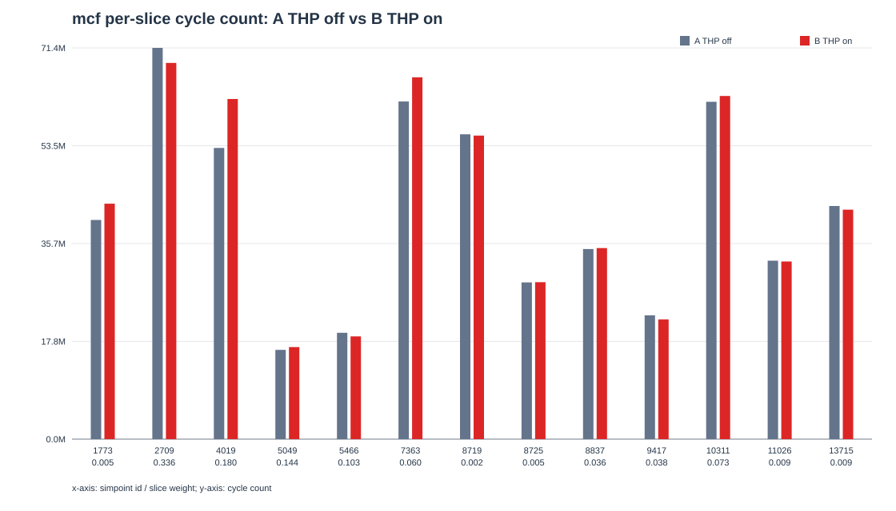
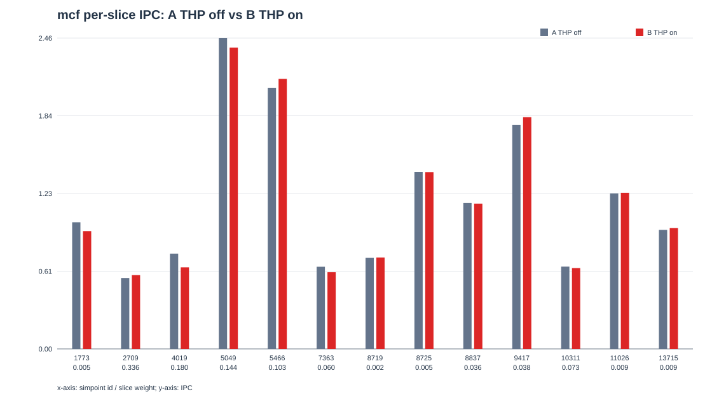

所有变化均为 B（开启 THP）相对 A（未开启 THP）；计数器来自最终快照，重复实例保留。


| 切片 | A cycles | B cycles | THP 开启周期变化 | A IPC | B IPC | THP 开启 IPC 变化 |
|---|---|---|---|---|---|---|
| mcf_1773_0.00540212 | 39,976,989 | 42,951,457 | +7.44% | 1.000576 | 0.931284 | -6.93% |
| mcf_2709_0.335742 | 71,358,964 | 68,624,579 | -3.83% | 0.560546 | 0.582882 | +3.98% |
| mcf_4019_0.180498 | 53,112,335 | 62,037,783 | +16.80% | 0.753121 | 0.644768 | -14.39% |
| mcf_5049_0.144169 | 16,280,860 | 16,793,812 | +3.15% | 2.456873 | 2.381830 | -3.05% |
| mcf_5466_0.103316 | 19,399,697 | 18,739,393 | -3.40% | 2.061888 | 2.134541 | +3.52% |
| mcf_7363_0.059896 | 61,586,061 | 65,999,041 | +7.17% | 0.649498 | 0.606069 | -6.69% |
| mcf_8719_0.00175569 | 55,604,633 | 55,362,612 | -0.44% | 0.719365 | 0.722509 | +0.44% |
| mcf_8725_0.00513201 | 28,594,285 | 28,628,350 | +0.12% | 1.398881 | 1.397217 | -0.12% |
| mcf_8837_0.0355865 | 34,674,340 | 34,844,203 | +0.49% | 1.153591 | 1.147967 | -0.49% |
| mcf_9417_0.03822 | 22,592,900 | 21,836,043 | -3.35% | 1.770468 | 1.831834 | +3.47% |
| mcf_10311_0.0726585 | 61,522,702 | 62,598,173 | +1.75% | 0.650167 | 0.638996 | -1.72% |
| mcf_11026_0.00877845 | 32,549,989 | 32,409,739 | -0.43% | 1.228879 | 1.234197 | +0.43% |
| mcf_13715_0.00884597 | 42,519,006 | 41,847,020 | -1.58% | 0.940756 | 0.955863 | +1.61% |
| 类别 | 计数器 | A 未开启 THP | B 开启 THP | 变化 |
|---|---|---|---|---|
| address-translation pressure | tlb_miss | 62,237,913 | 29,652,376 | -52.36% |
| address-translation pressure | tlb_req_count | 63,276,845 | 29,796,524 | -52.91% |
| page-table-walk traffic | ptw_req_count | 35,279,803 | 8,426,630 | -76.11% |
| page-table-walk traffic | ptw_resp_count | 140,590,731 | 33,666,589 | -76.05% |
| superpage-cache activity | sp_hit | 8,761 | 3,260,770 | +37119.15% |
| superpage-cache activity | spRefill | 133 | 3,379,024 | +2540519.55% |
| page-table-walk traffic | E2_L2AReqSource_PTW_Miss | 743,850 | 49,201 | -93.39% |
| data-cache pressure | l1DemandMiss | 19,194,864 | 25,891,253 | +34.89% |
| data-cache pressure | l2demandMiss | 4,547,193 | 3,980,256 | -12.47% |
| data-cache pressure | dcache_miss | 129,046,758 | 127,678,245 | -1.06% |
| memory-system activity | mem_cycle | 198,204,001 | 111,680,783 | -43.65% |
| load latency | LoadL2Stall | 86,333,052 | 120,651,089 | +39.75% |
| load latency | LoadL3Stall | 63,543,565 | 45,394,186 | -28.56% |
| load latency | LoadMemStall | 439,566,212 | 315,507,731 | -28.22% |
| backend readiness | MemNotReadyStall | 55,023,925 | 263,960,139 | +379.72% |
| backend readiness | backend_stall_cycle | 174,942,455 | 182,005,850 | +4.04% |
| backend readiness | exec_stall_cycle | 134,156,065 | 142,639,549 | +6.32% |
| front-end readiness | stallCycles_fetch_ifuNotReady | 160,350,205 | 175,524,279 | +9.46% |
| front-end readiness | stallCycles_ibufferFull | 163,914,343 | 178,801,618 | +9.08% |
| front-end/backend queues | stall_cycle_iq | 124,529,957 | 134,201,600 | +7.77% |
| front-end/backend queues | stallCycles_decodeFull | 172,119,143 | 179,414,204 | +4.24% |
| control flow | branchMispredicts | 1,097,430 | 1,085,346 | -1.10% |
详细解释见 report.md；完整数据见 counter_comparison.csv。